文字エンコードを指定してファイルを保存する
Visual Studio Code では新しく作成したファイルや既存のファイルを編集したあとでファイルを保存するとき、「保存」や「名前を付けて保存」を使ってファイルを保存すると、ファイルを開いた時に使用している文字エンコードを使って保存されます。別の文字エンコードで保存したい場合は別の手順で行う必要があります。ここでは Visual Studio Code で文字エンコードを指定してファイルを保存する方法について解説します。
文字エンコードを指定してファイルを保存する
Visual Studio Code ではデフォルトで文字エンコードとして UTF-8 を使用します。その為、新しいファイルを作成した場合の文字エンコードは UTF-8 が使用されます。既存のファイルを開くときは最初デフォルトの文字エンコードの UTF-8 で開きますが、文字エンコードを指定して開きなおすこともできます。(文字エンコードを指定ファイルを開く方法は「文字エンコードを指定してファイルを開く」を参照してください)。
現在開いているファイルで使用している文字エンコードはステータスバーの次の個所をみると確認できます。
「保存」や「名前を付けて保存」でファイルを保存する場合、現在の文字エンコードを使って保存されます。
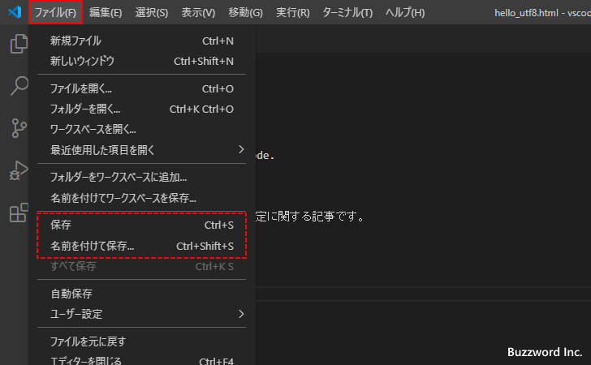
現在の文字エンコード以外の文字エンコードを使ってファイルを保存するには、文字エンコードを指定してファイルを保存する必要があります。
既存ファイルを文字エンコードを指定して保存
最初に既存のファイルを開いている場合で試してみます。 Visual Studio Code の画面右下に表示されている「UTF-8」と表示されている箇所をクリックしてください。

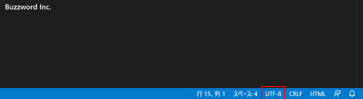
画面上部にアクションの選択画面が表示されます。「エンコード付きで保存」をクリックしてください。(英語の場合は「Save with Encoding」をクリックしてください)。
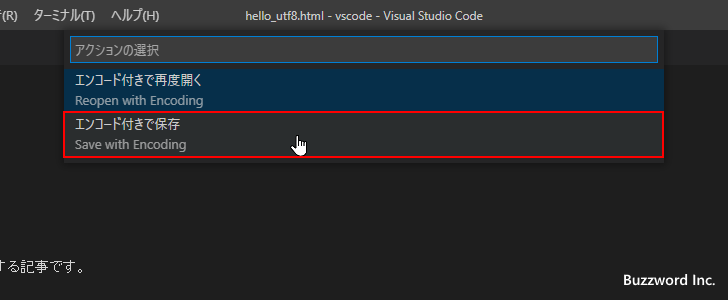
エンコードの選択画面が表示されます。
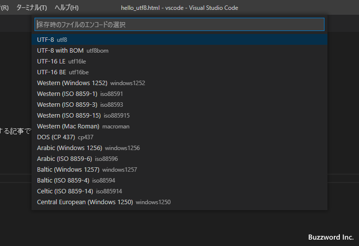
今回は Shift_JIS の文字エンコードを使って保存してみます。エンコードの一覧の中から「Japanese(Shift_JIS)」をクリックします。
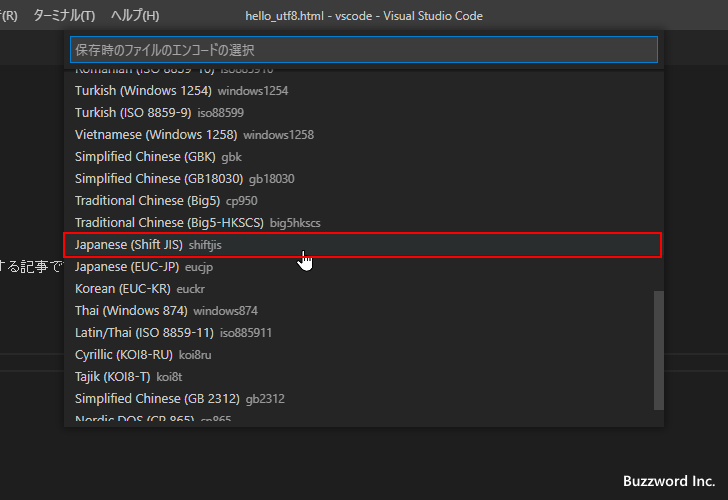
選択した文字エンコードを使ってファイルが保存されました。既存のファイルの場合は文字エンコードを指定して上書き保存となります。この時点でファイルの文字エンコードは変更されているので、別の名前で保存したい場合はあらためて「名前を付けて保存」で保存してください。
新規ファイルを文字エンコードを指定して保存
次に新しいファイルを保存する場合です。同じように Visual Studio Code の画面右下に表示されている「UTF-8」と表示されている箇所をクリックしてください。
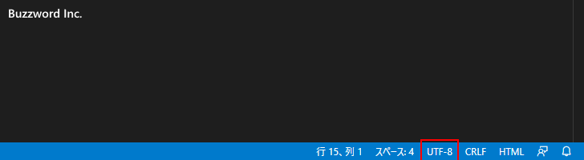
新規ファイルの場合はすぐにエンコードの選択画面が表示されます。
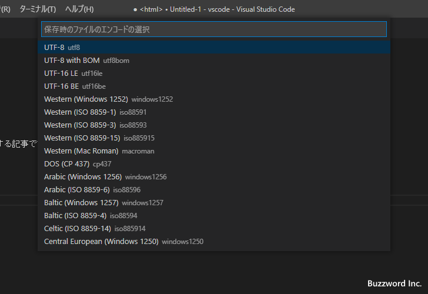
今回は EUC-JP の文字エンコードを使って保存してみます。エンコードの一覧の中から「Japanese(EUC-JP)」をクリックします。
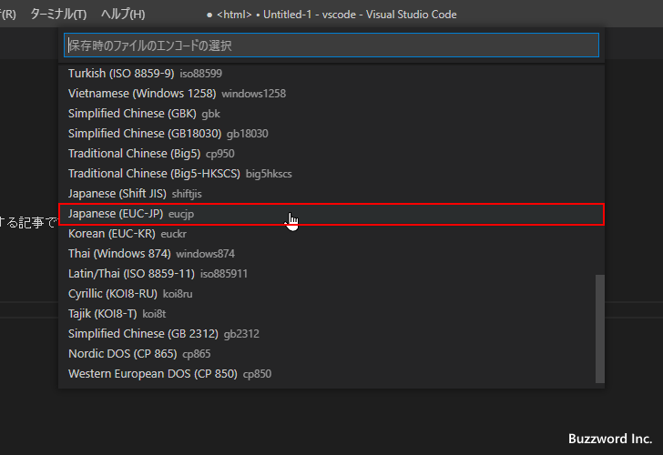
ファイルの文字エンコードが変更されました。新規ファイルの場合はまだこの時点では保存はされていないので「ファイル」メニューの中の「保存」または「名前を付けて保存」をクリックしてファイルを改めて保存してください。
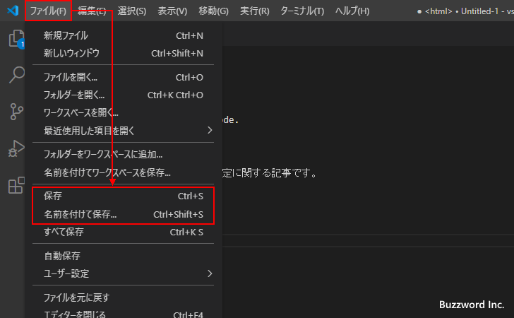
ファイルを保存するときの文字エンコードをコマンドパレットから設定する
ファイルを保存するときの文字エンコードの選択はコマンドパレットからも設定できます。「表示」メニューの中の「コマンドパレット」をクリックしてください。
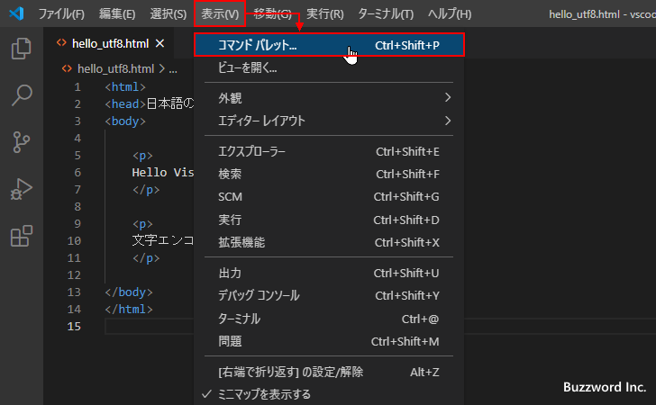
コマンドパレットが表示されたら「エンコード」または「Encoding」と入力してください。そして表示されたメニューの中から「ファイルのエンコードの変更」をクリックしてください。
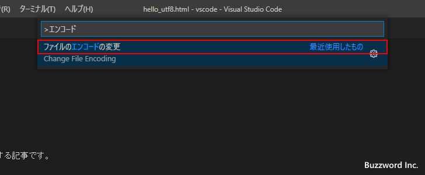
アクションの選択画面が表示されます。「エンコード付きで保存」をクリックしてください。(英語の場合は「Save with Encoding」をクリックしてください)。
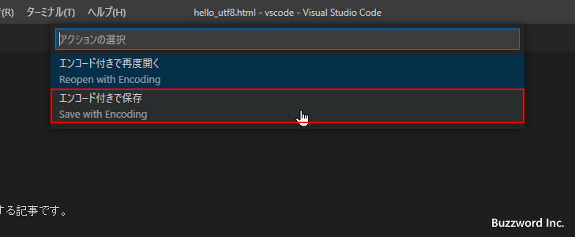
あとの手順はステータスバーから設定を行った手順と同じです。
-- --
Visual Studio Code で文字エンコードを指定してファイルを保存する方法について解説しました。
( Written by Tatsuo Ikura )

著者 / TATSUO IKURA
初心者～中級者の方を対象としたプログラミング方法や開発環境の構築の解説を行うサイトの運営を行っています。